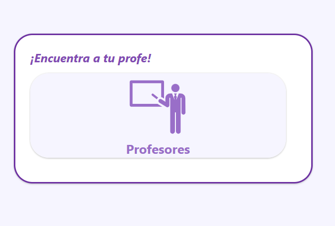

Mi Profe UP
Una plataforma donde los estudiantes de la UP pueden compartir reseñas sobre profesores y cursos. Experiencias reales que ayudan a elegir mejor antes de la matrícula.
La idea es simple: lo que aprendiste en un curso puede ayudar a alguien que está por llevarlo.
Explora nuestros videojuegosmi-profe-up / comunidad

Tu experiencia le sirve a alguien más.
Compartir una reseña convierte lo que viviste con un profesor en una referencia para otros estudiantes.
mi-profe-up / profesores

Elige con más contexto.
Encuentra profesores y conoce las experiencias de la comunidad antes de organizar tu matrícula.